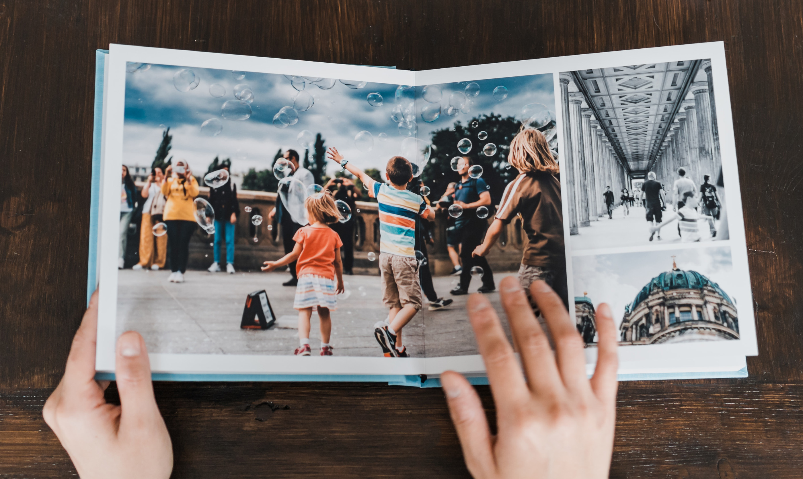

Learn more about me, my love for travel, and the stories behind my adventures

Hello! I'm Roshni, a passionate traveler who loves exploring new destinations, experiencing different cultures, and capturing my journey through photos, videos, and stories. This website is my way of sharing those amazing moments with you.
I've always believed that travel is more than just visiting places; it's about the people you meet, the lessons you learn, and the memories you create. Through this website, I aim to inspire fellow travelers and provide useful insights about the places I’ve been to.
From the bustling streets of Tokyo to the serene beaches of Bali, every place has left a special mark on my heart. Whether it’s hiking in the Swiss Alps or tasting street food in Bangkok, each experience has been an adventure.
"Travel isn’t always pretty. It isn’t always comfortable. Sometimes it hurts, it even breaks your heart. But that’s okay. The journey changes you; it should change you." – Anthony Bourdain
My bucket list is never-ending! Follow along as I continue to explore new destinations and share my experiences with you. Feel free to reach out on the Contact Page!